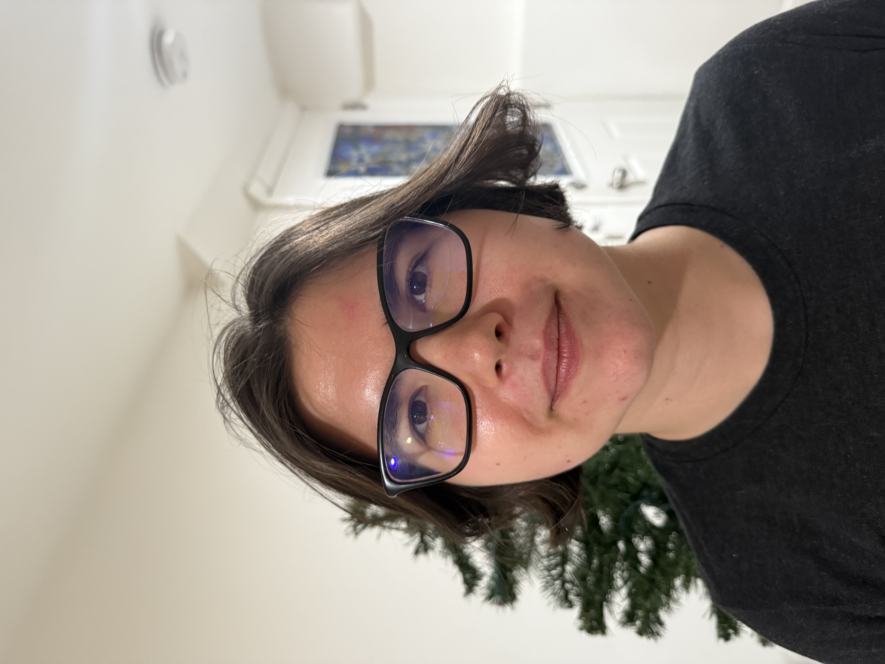
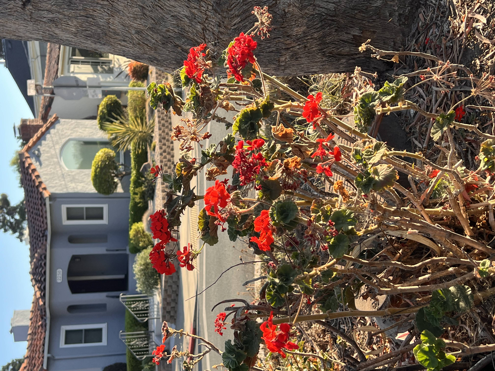
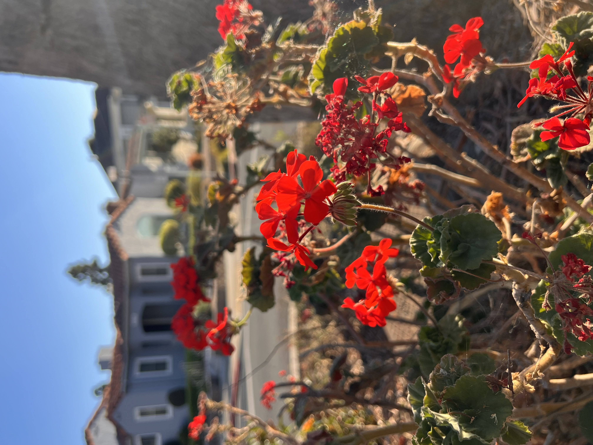
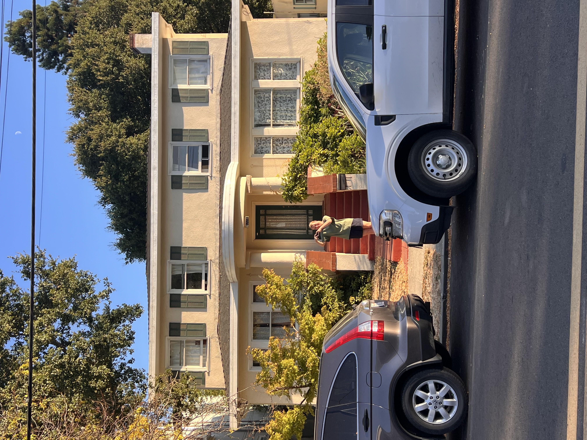
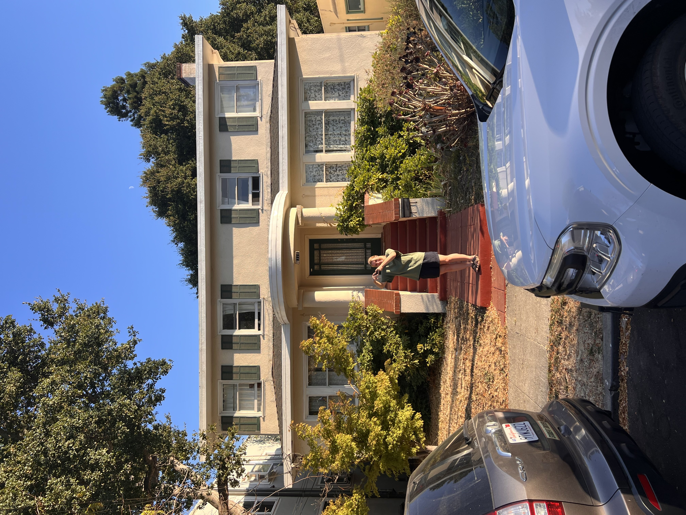

I suspect that a super close up picture only captures a limited range of angles, so the face appears thinner and distorted around the center of the face. The farther away the camera goes, the longer the focal length, and the wider the range of angles the camera can capture, hence the "rounder" face.
Below, the leftmost photo is close up and the farthest to the right was taken the furthest distance away.
Our phone camera cannot use an optical zoom (lenses move in accordance with a change in accordance with focal length) to the same degree profesional cameras can. Instead, our phones rely on computational imaging techniques in order to accomplish the optical/digital zoom.
Below, the left images are zoomed in and on the right, I came closer to the object to take the photo. I went around the neighborhood with my friend Masha to find objects for this project (she's featured in the second example).
 If you zoom in on Masha, the difference in zoomed vs closer up is very clearly seen.
 I had so much fun trying to find interesting objects for the dolly zoom! Below are some beautiful doors, where the window in porch starts to appear as the gif progresses. I also noticed the color saturation changed as I took pictures.

This one was inspired by the Lord of the Rings dolly zoom! I also loved the evening sun here and how it created a lens flare on the camera.